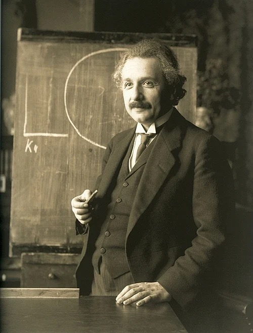
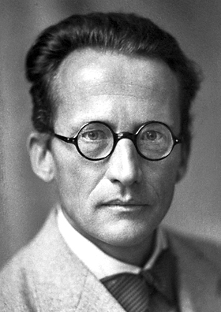
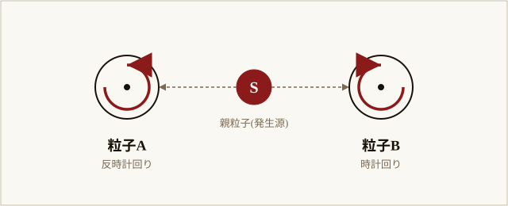
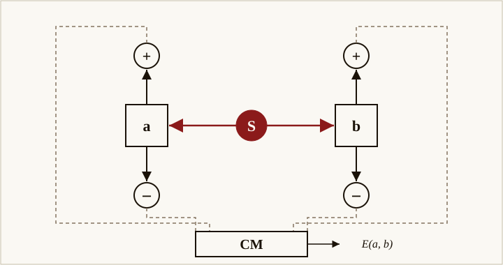
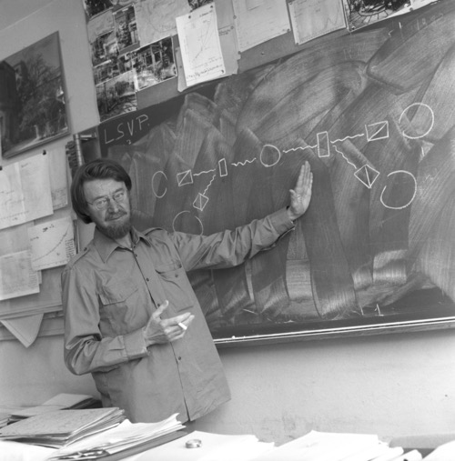
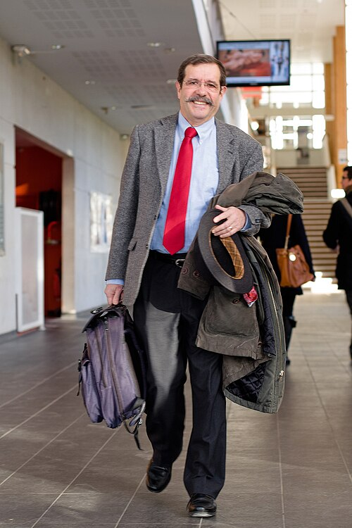
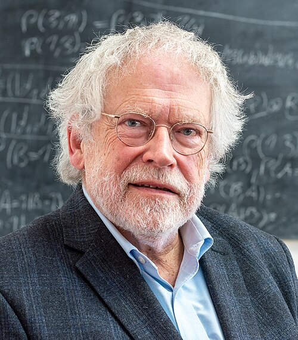
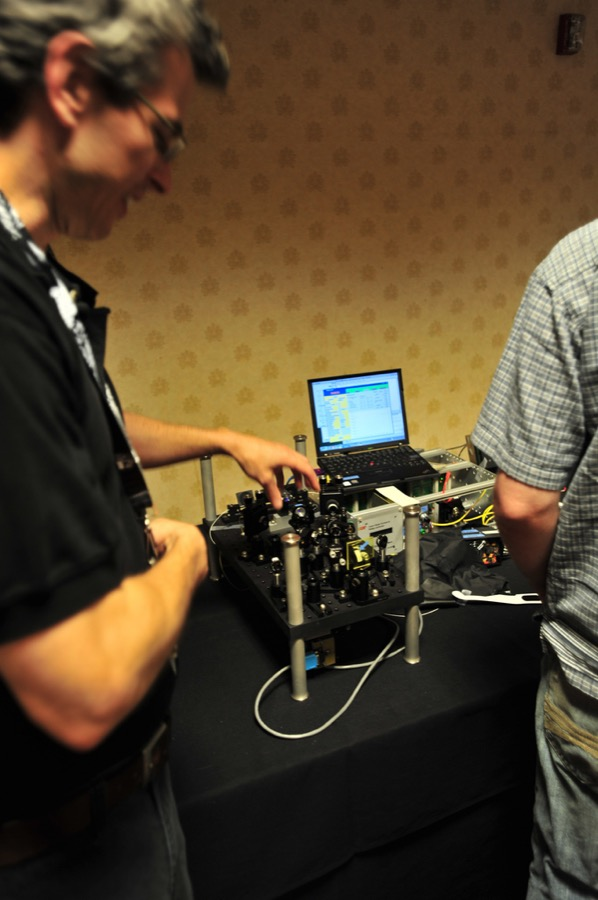
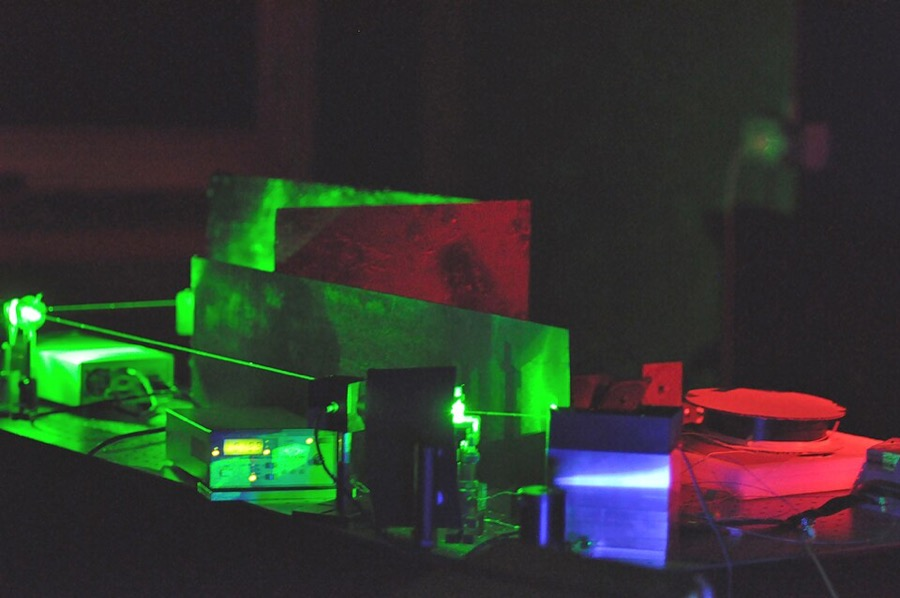
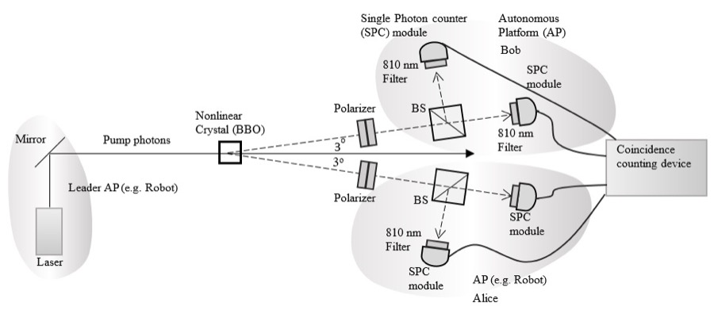

物理・宇宙
アインシュタインが嫌ったこの現象は、光速を超えて何かを送るように見える。だが実は、信号は何も走っていない——後から両者の結果を突き合わせて初めて、「揃っていた」ことが分かるだけだ。EPR思考実験から90年、この区別を自分で測定して体感する。
アインシュタイン、ポドルスキー、ローゼンが"EPRパラドックス"を発表。同年シュレーディンガーが"Verschränkung"(もつれ)と命名。
同年の世界: 米で社会保障法成立。独でニュルンベルク法制定。日本で天皇機関説事件。"ゴジラ"誕生の19年前。
あれから90年。2022年、この現象を実験で決定づけたアラン・アスペ、ジョン・クラウザー、アントン・ツァイリンガーがノーベル物理学賞を受賞。量子もつれは"不気味"から"実用技術"に変わった。
「離れた場所にいる双子が、同時に同じことを考える」——都市伝説として一度くらい耳にしたことがあるだろう。
実際のところ、双子に送信機能はない。ただ、似た性格が似たタイミングで似た反応を起こしているだけだ。送信しているのではなく、共有された過去が今の反応を揃えている。
量子もつれは、見た目はこれに似ている。だが、共有された過去だけでは作れないほど強い相関を持つ。それでいて、そこを通って信号は一つも送られていない。
二つの粒子を同時に測ると、確かに瞬時に結果が揃う。しかし片方の操作だけでもう片方に信号を送ることはできない——読者自身がシミュレーターでそれを確かめる。
本題に入る前に、量子もつれが扱う"小ささ"の感覚を持っておきたい。私たちの目に見える世界は、ズームインしていくと次のような階層を持っている。
物質を分解していくと、最後は「素粒子」にたどり着く。クォーク・電子・光子はそれぞれ独立した別の粒子で、これ以上分けられない。この記事の主役は 光子 と 電子——どちらも素粒子の一種。量子力学はこの世界の物理学で、私たちの常識(野球ボールの運動など)とは違うルールが顔を出す。
古典物理(野球ボールや惑星のレベル)では、物の状態は「測ろうが測るまいが、そこにある値」として書ける。ところが素粒子のレベルに降りると、状況が変わる。"測定する前は、値が確定していない"——これが量子力学の出発点だ。量子もつれは、この世界で2個の粒子が一緒に作られたとき、両者の運命が結びつき、片方を測るともう片方も同時に確定する、という現象である。
1935年5月、アインシュタインは二人の若い同僚——ボリス・ポドルスキーBoris Podolsky (1896-1966)
ロシア生まれの理論物理学者。プリンストン高等研究所でアインシュタインのもとで研究し、EPR論文の実質的な起草者となった。とネイサン・ローゼンNathan Rosen (1909-1995)
アメリカの理論物理学者。EPR論文の共著者の一人。後にイスラエルのテクニオン工科大学で重力理論の研究を進めた。——とともに、Physical Review誌Physical Review
1893年創刊、米国物理学会(APS)が発行する物理学の最重要学術誌の一つ。20世紀の物理学の主要な発見の多くがここで発表された。に一本の論文を送った。タイトルは「量子力学的な物理実在の記述は完全だと考えうるか」。3人の答えは、いいえ、だった——量子力学は間違ってはいないが、世界の何かを書ききれていない、と。後にこの論文は、3人の頭文字をとってEPRパラドックスEPRパラドックス
Einstein-Podolsky-Rosen の頭文字。量子もつれの非局所性を「パラドックス」として最初に指摘した思考実験。1935年の論文がそのまま通称になっている。と呼ばれるようになる。
彼らの言い分は、おおまかにこういう論法だった。「もし、ある物理量を、対象に触れずに確実に予言できるなら、その値は最初から"そこに在った"と考えるべきだ」——たとえば、箱の中身を一切覗かずに「中の温度はちょうど20℃です」と毎回当てられるなら、温度は最初から決まっていたと考えるのが普通だろう。常識的には反論しがたい主張で、20世紀前半の物理学者の多くもこれを受け入れていた。
そして3人は、この常識を量子力学にぶつけるための思考実験を持ち出した。2個の粒子を一緒に作って、反対方向へ遠くまで飛ばす。説明をシンプルにするため、左の測定者をAliceAlice / Bob
暗号学・量子情報学の業界標準の"役名"。1978年のRSA暗号原論文(Rivest, Shamir, Adleman)以降、「2者が通信する」例として論文・教科書で広く使われている。EPR論文(1935)時点では存在しなかった呼称だが、現代の解説ではこの2人で書くのが慣例。、右の測定者をBobと呼ぼう(以後この記事を通してこの2人が登場する)。すると量子力学の数式は、こう保証する。Aliceが自分側の粒子の"位置"を測れば、Bobの粒子の位置はその瞬間に確定する。Bobの粒子に誰も触れていないのに、だ。同じことが"運動量"についても言える。Aliceが運動量を測れば、Bobの運動量も同様に予言できてしまう。
ということは、先ほどの論法に従えば、Bobの粒子は、位置も運動量も、最初から確定値として持っていたはず——両方一度に。ところが量子力学は、位置と運動量を同時に確定値として持つことを禁じている(不確定性原理不確定性原理
ハイゼンベルクが1927年に定式化した量子力学の基本原理。位置と運動量、エネルギーと時間など、特定の組み合わせの物理量は、同時に厳密な値を持つことができないとする。)。だからアインシュタインたちはこう結論した: 量子力学は、世界の実在のすべてを書ききれていない——つまり不完全である。
アインシュタインの不満はもう一段奥にあった。それでも、Aliceが測った瞬間にBobの粒子の状態が"確定する"のなら、その情報は粒子の間を光速を超えて走ったことになる——時空の常識に反する。彼はこれを、1947年のマックス・ボルン宛の手紙の中で"spukhafte Fernwirkungspukhafte Fernwirkung
(シュプークハフテ・フェルンヴィルクング)ドイツ語。英訳は "spooky action at a distance"。遠隔地にいる対象が瞬時に影響を及ぼし合うように見える現象。アインシュタインの造語として有名。"——不気味な遠隔作用——と呼んだ。
"I cannot seriously believe in it because the theory cannot be reconciled with the idea that physics should represent a reality in time and space, free from spooky actions at a distance."
時間と空間のなかの実在を、不気味な遠隔作用なしに記述するのが物理学の役目である——私はこの立場と量子力学を両立させられないので、真剣には信じられない。
— Einstein to Max Born, 1947年3月3日

Albert Einstein
EPR論文 主著者の一人 (1935)
量子力学を「不完全」と批判し続けた。EPR論文の起草はほぼポドルスキーが担当しており、アインシュタイン自身は1935年6月19日のシュレーディンガー宛書簡で「論文の本当の主張(実在性と局所性のジレンマ)が、ポドルスキーの形式的な博識さ(Gelehrsamkeit)に埋もれてしまった」と漏らしている。
WikipediaF. Schmutzer, 1921 / Public Domain
同じ年の10月、オーストリアの物理学者エルヴィン・シュレーディンガーErwin Schrödinger
1887-1961。波動力学の創始者。1933年ノーベル物理学賞受賞。"シュレーディンガーの猫"でも知られる。が、英Cambridge Philosophical SocietyCambridge Philosophical Society
1819年創立、英ケンブリッジ大学を拠点とする学術団体。同会発行の Mathematical Proceedings は数学・物理学の主要誌の一つ。の論文で、この現象に名前を与えた。ドイツ語でVerschränkung——「絡み合い」。英語ではentanglement、日本語ではもつれと訳された。
"I would not call [entanglement] one but rather the characteristic trait of quantum mechanics, the one that enforces its entire departure from classical lines of thought."
もつれを量子力学の特徴の"一つ"とは呼びたくない。むしろ、古典的な思考から量子力学を根本的に切り離す、最も特徴的な性質と呼びたい。
— Schrödinger, 1935

Erwin Schrödinger
"もつれ" の命名者 (1935)
アインシュタインとは立場が違ったが、量子力学の基礎に違和感を抱いていた点は同じ。もつれ現象を「量子力学の本質」と位置づけた最初の物理学者。
WikipediaNobel Foundation, 1933 / Public Domain
そもそも「もつれている」とはどういうことか。最も素朴な絵で言えば、こういうことだ。

中央の楕円が親粒子(原子など)、そこから左右に飛び出す矢印が2個の粒子(電子や光子)のスピン(自転に似た性質)。左が時計回りなら、右は必ず反時計回り——親粒子の角運動量保存則からの自然な帰結。ただし量子力学では、「どちらがどちら回りか」は測定するまで決まっていない。Aliceが左を測った瞬間、何キロ離れていてもBob側の右が確定する——これが量子もつれの最も素朴な姿だ。
ややこしそうと感じたら「ふーん、向きが反対になるのね」くらいで先に進んでOK。詳しい話は次の体験パートで自分の手で触れる。
Guy vandegrift, 2016 / CC BY-SA 4.0
この記事では、これ以降「EPR源」という装置がしばしば登場する。これは「もつれた光子(または電子)のペアを1組ずつ生み出す装置」を指す総称で、Einstein-Podolsky-Rosen の頭文字。実際の研究室では、紫外レーザーを非線形結晶非線形結晶 (nonlinear crystal)
BBO(β-バリウムボレート)など、入射した光子の周波数を別の周波数に変換できる特殊な結晶。1個の高エネルギー光子を2個の低エネルギー光子に分裂させる「自発的パラメトリック下方変換(SPDC)」が、もつれ光子源の標準手法。に当てて1個の光子を2個のもつれ光子に分割する手法(SPDC)が標準で、本記事の歴史パートで実物の写真も出てくる。以下のSVG・シミュレーターでは、この装置の中身は気にせず「中央から左右にもつれペアが飛んでくる箱」として描いている。
古典相関は「もう決まっている事実を後で見る」だけ。量子相関は「測定の瞬間に両方が決まる」。この違いは、数学的に区別できる。
古典的な感覚では、「離れた場所の値が相関する」のはまったく不思議ではない。私が赤い手袋をカバンに入れ、きみに青い手袋を送ったら、きみがカバンを開けた瞬間、私は自分のがどっちかを知る。しかし、これは単に二人とも最初から答えを持ち歩いていただけだ。量子もつれがこれと違うのは、どちらが赤でどちらが青か、測る瞬間まで誰も決めていないところにある。
❌ 誤解
量子もつれを使えば、光速を超えて情報が送れる。
✓ 実際
測定すると瞬時に相手側の結果が確定するが、結果そのものは毎回ランダム。片方を見るだけでは、もう片方を操作された痕跡は残らない。信号は光速を超えない。
❌ 誤解
量子テレポーテーションで物体が瞬時に転送できる。
✓ 実際
転送されるのは物体ではなく"量子状態"だけ。しかも、操作の成功を受け取り側が知るには古典通信(光速以下)が必須。『スタートレック』スタートレック (Star Trek)
1966年9月8日に米NBCで放送開始したSFテレビシリーズ。"トランスポーター"で乗組員を energy pattern に分解し、瞬時に別場所(惑星表面など)へ転送する架空の装置が登場する。"Beam me up"の決め台詞でも知られる。式の転送は起きない。
❌ 誤解
ベル不等式が破れたということは、隠された変数が実在する証拠だ。
✓ 実際
逆である。破れたということは、局所的な隠れ変数では量子の振る舞いを説明できないことが示された。アインシュタインの直感は負けた。
準備:このシミュレーターで何を見るのか
これから動かすシミュレーターは、もつれた光子のペアに対して、AliceとBobがそれぞれ「偏光フィルタ偏光フィルタ
特定の方向に振動する光だけを通す板。サングラス・カメラのPLフィルタにも入っている。フィルタの向きが光の振動方向と揃っていれば光は通り、直交していれば通さない。」を当てて、光が通ったか(+)・通らなかったか(−)を測る。動かす前に、3つだけ確認しておきたい。
偏光フィルタの向きと光の振動方向が揃えば光は通り(+)、直交すれば通さない(−)。中間の角度では確率的に通る/通らないが決まる。
1. もつれた光子ペアの偏光は揃っている。EPR源EPR源 (EPR source)
「もつれた光子(または電子)ペアを連続的に作り出す装置」のこと。Einstein-Podolsky-Rosen の頭文字。実際の研究室では、紫外レーザーを非線形結晶(BBO等)に当てて1個の光子を2個のもつれ光子に分裂させる方法(SPDC)が標準。記事内の「EPR源」というラベルは、このタイプの装置の総称。から出る2個の光子は、(理想化すれば)同じ向きに振動している。だから、AliceとBobが同じ角度のフィルタで測れば、結果は必ず一致する(+/+ または −/−)。
2. 個々の結果は、どちらもランダム。Alice側だけを見ていると、+ と − がほぼ半々で出る。Bob側だけを見ても同じ。両者の結果を後で突き合わせて初めて、相関(=一致率)が見える。これが「もつれは情報を送れない」「でも統計的には完全に一致する」というパラドキシカルパラドキシカル (paradoxical)
「一見矛盾しているように見える」状態を指す形容詞。論理的に両立しないように思えるのに、両方が同時に成立しているとき使う。例: 「観測する前には決まっていない、なのに離れた場所で必ず一致する」。な状況の正体だ。
3. 角度をズラすと、一致率が変わる。同じ角度なら100%一致、直交していれば100%不一致。中間の角度では、量子力学が予言する「特殊な変化のしかた」(後で出てくるcos曲線cos曲線 (cosine curve)
三角関数の「コサイン」が描く、滑らかな波打つ曲線。0°で最大、90°で0、180°で最小という形をとる。量子もつれの一致率は、AliceとBobの角度差Δに対して「cos²Δ」あるいは相関値として「cos(2Δ)」で動く。古典的な仮定では、相関は折れ線(直線の組み合わせ)までしか作れず、cos曲線の滑らかさは出せない。)で一致率が動く。この曲線の形こそが、古典的な世界観との決定的な違いを作る。
準備はここまで。3つのフェーズで、自分で測定する。Phase 1は相関の発見、Phase 2は信号が送れない証明、Phase 3はベルの不等式|S|≤2を破る瞬間。順番に触ってみる。
Phase 1 — 同じ角度で測れば、必ず一致
中央のEPR源からもつれた光子ペアが左右に飛ぶ。Alice と Bob の偏光フィルタはどちらも0°。「1ペア測定」を何回か押す。結果の±記号に注目。
気づき: 結果の±自体はランダムに見えるが、Alice と Bob の符号は毎回ぴたり一致する。離れた2点で、独立にランダムなのに、揃っている。これが"もつれ"の生の姿だ。
Phase 2 — Alice が角度をいじっても、Bob側は何も変わらない
中央のEPR源からもつれペアが左右へ。Alice 側のフィルタ角度だけスライダーで動かす。
何を試すか: Alice の偏光フィルタの角度をスライダーで決め、その状態でもつれペアを1000ペアまとめて測定する。下のグラフは、その1000ペアのうち Bob 側で「+」が何回、「−」が何回出たかの出現比率。Bob 側の角度は 0° 固定。
ねらい: もし Alice の角度操作が Bob に「信号」として届くなら、Alice の角度を 0° → 30° → 60° → 90° と動かせば、Bob 側の +/− 比率が変動するはず。スライダーをいくつか動かして、その都度 1000ペア測ってみる。
気づき: Alice の角度をどう変えても、Bob の "+" と "−" の比率はほぼ 50:50 のまま。Alice の操作は Bob の測定結果の分布を動かせない。つまり、ここを通って信号は流れていない。相関は測ったあとで、両者の結果を突き合わせないと見えない。
Phase 3 — 古典の限界 |S| ≤ 2 を、量子が破る
これから動かすのは、CHSHCHSH (Clauser-Horne-Shimony-Holt)
1969年に4人の物理学者(Clauser, Horne, Shimony, Holt)が提案した、ベル不等式を実験で扱いやすく書き直した形式。AliceとBobがそれぞれ2通りずつの角度(計4通り)で測定し、相関値を S = E(a,b) − E(a,b′) + E(a′,b) + E(a′,b′) と組み合わせる。古典的には常に |S| ≤ 2、量子では最大 2√2 ≈ 2.828。1972年以降のベル実験のほぼ全てがこの形式を使う。 不等式と呼ばれる、ベル不等式を実験用に書き直したもっとも有名な形だ。
4つの角度を選ぶ理由。もつれの強さを古典的に説明できるかは、1つの角度差では分からない。「Aliceは2通り(a, a′)、Bobも2通り(b, b′)の角度から選び、4通りの組み合わせで相関を測る」——これが 局所的な隠れ変数局所的な隠れ変数(local hidden variable)
「粒子は測定前から決まった値を持っており、その値は光速以下でしか伝わらない」というアインシュタイン型の仮定。ベルはこの仮定のもとで |S|≤2 が成り立つことを証明した。 を実験で締め出すために Bell(と CHSH の4人)が考案した手筋。
相関値 E とは。ある角度ペアで多数回測り、(+,+) と (−,−) の組(=一致)から (+,−) と (−,+) の組(=不一致)を引いて全測定数で割った値。完全一致なら +1、完全不一致なら −1、無相関なら 0。
S とは。4つの相関値を S = E(a,b) − E(a,b′) + E(a′,b) + E(a′,b′) と組み合わせた量。古典的に値が事前に決まっているなら、どう4角度を選んでも |S| ≤ 2。量子力学では cos 曲線の特殊な"歪み"によって 最大 2√2 ≈ 2.828 まで届く——cos 曲線の数学的上限がそのままここに現れる。

CHSH実験の標準スキーム。中央の光源(S)から左右に光子が飛び、それぞれ偏光子(a, b)を通って "+" "−" の検出器に届く。一致モニタ(CM)で4通りの組み合わせをカウントし、相関値 E を出す。これを a, a′, b, b′ の4設定で行う。
George Stamatiou, 2008 / CC BY-SA 3.0
スライダーで何が変わるか: Alice の偏光器の角度を a と a′ の2通り、Bob を b と b′ の2通り選ぶ。「4,000ペア測定」を押すと、(a,b) (a,b′) (a′,b) (a′,b′) の4設定 × 1,000ペアずつを一気に走らせ、それぞれの相関値 E と合成値 S を計算する。「最適角度に設定」を押すと、量子が古典上限を最大に超える角度組(a=0°, a′=45°, b=22.5°, b′=67.5°)に揃う——その状態で測ると、S が 2 を超えて 2√2 ≈ 2.828 に近づく。スライダーを最適から少しずらすと、S が 2 以下に戻ってしまうのも見える。
S = E(a,b) − E(a,b′) + E(a′,b) + E(a′,b′) = —
気づき: 「最適角度に設定」を押してから測定すると、S が 2 を超える。古典的な世界観(値は測定前から決まっている+影響は光速以下)では、絶対にこの値は出せない。アスペが 1982 年に実験で確かめたのは、まさにこれだ。
シミュレーターの結果をまとめると、こうだ。
(1) 相関は完全にある。離れた粒子が、何度測っても揃う。
(2) しかし片方をいじっても、もう片方の分布は微動だにしない。つまり情報は送れない。
(3) そのうえで、相関の強さは古典の上限を超える。これは単なる偶然では説明がつかない。
角度差Δごとの相関値。古典の隠れ変数モデルで作れる相関は"折れ線"の範囲内に収まるが、量子はcos曲線で描ける。差が最大になる Δ=45° が、ベル不等式を破る"スイートスポット"。4つの角度をうまく選ぶとCHSH値 S=2√2≈2.828 を引き出せる。
"It's spooky, but it's not action at a distance."
不気味だ。しかし、遠隔の作用ではない。
— Charles H. Bennett (IBM、量子情報理論の創始者の一人)
体験で見たことを言葉にすると、こうだ。「角度を変えると相関が変わる。それも、4つの角度を組み合わせると、古典的な世界観では絶対に出せない値が出る」。この観察を最初に数式に落とし込み、実験で白黒つけられる問題に変えたのが、アイルランド出身の物理学者ジョン・ベルだ。1964年、彼はCERNに所属していた。EPR論文から29年が経っていた。それまでアインシュタインの不満は"哲学"の領分にあったが、ベルはこれを物理学の決着可能な問いに翻訳した。
ベルの発想を一言で言うとこうだ。「もし粒子が観測前から値を持っていて、しかも遠隔地への影響が光速以下なら——これを局所実在論局所実在論(local realism)
「1. 粒子は観測される前から物理量を持っている(実在)」+「2. 空間的に離れた地点に瞬時には影響しない(局所性)」の二つを合わせた仮定。古典物理の常識そのもの。と呼ぶ——AliceとBobの結果の相関には、数学的に絶対超えられない上限が出る」。これが体験のPhase 3で動かした |S|≤2 の正体、ベル不等式だ。
ところが、量子力学が予言するSの最大値は 2√2 ≈ 2.828。古典的な常識の枠を、約40%も突き抜ける。つまり、実験でSが2を超えるかどうかを測れば、アインシュタイン側の世界観が間違っているかどうかが分かる——これが、ベルが立ち上げた決着の道筋だった。

ベルの仕事は理論だった。あとは誰が実験で決着をつけるかの問題になった。1972年にジョン・クラウザーが初の実験を行い、量子力学側を支持する結果を出した。しかし、抜け穴(loophole)が残っていた。「測定装置の設定が事前に粒子に伝わっていたのではないか」という疑念だ。
Aspect, Dalibard, Roger (1982) の"タイミング実験"。偏光器の切り替えは、もつれ光子がソースから検出器に届くまでの 40 ns より短い時間で行われた。

Alain Aspect
決定的実験の実行 (1982)
パリ郊外のオルセーで、ジェラール・ロジェ、ジャン・ダリバールと共に3段階の実験を行った。1982年の実験ではベル不等式の破れを40標準偏差で確認。事実上この段階で、ほとんどの物理学者が量子もつれの実在を疑うことをやめた。
WikipediaJérémy Barande / École Polytechnique (Paris-Saclay) / CC BY-SA 2.0
さらにその先へ進めたのがオーストリアのアントン・ツァイリンガーだ。1997年、彼のグループは世界で初めて量子テレポーテーションの原理実証に成功した。光子の量子状態が、もつれを媒介として別の光子へ乗り移る——ただし、古典通信(光速以下)を併用するという条件つきで。これによって、もつれが単なる奇妙な哲学的話題から、量子情報技術の基本資源へと変わった。

ここで一つ、概念から離れて現物を見てほしい。下の写真は2009年、DEF CON 17(情報セキュリティ会議)で公開されたもつれ光子対生成装置だ。黒い光学台に並んだレンズ、鏡、そして中央の小さな結晶——これでAliceとBobに向けてもつれた光子ペアが飛んでいく。もつれは机の上の標準的な光学部品で日常的に作れるところまで来ている。

NISTのJosh Bienfangが解説する、もつれ光子対生成装置。BBO(β-バリウムボレート)結晶に紫外レーザーを当てる自発的パラメトリック下方変換(SPDC)で、1個の高エネルギー光子を2個のもつれた低エネルギー光子に分割する。これが現代のベル実験と量子暗号の標準的な"EPR源"だ。
Nate Grigg, 2009 / CC BY 2.0(リサイズ済)
研究グレードの装置になると、見た目はこうなる。NIST(米国立標準技術研究所)の量子情報研究室で実際に運用されているもつれ光子源だ。中央で緑のレーザー(波長532 nm)が結晶を貫き、そこから波長の異なる2本のもつれ光子(画像では青と赤に色分けされている)が生まれて光ファイバーへ分配される。アインシュタインが思考実験で論じた"不気味な遠隔作用"は、いまや机一台に収まる量産品になった。

NISTのゲート式光子源(Gated photon source)。532 nm の緑レーザーが結晶を叩いて、810 nm(画像では青に着色)と1550 nm(赤に着色)のもつれ光子ペアに変換する。「青」がヘラルド(到着合図)信号、「赤」がファイバーリールで遅延され、ゲートのタイミング制御に使われる。
Brida / INRIM via NIST, 2010 — Public Domain(US Federal Government work) / Commons
この光学台で実際に何が起きているのか、線画で見るとこうなる。

左から強い紫外レーザーを撃ち込み、非線形結晶(BBOなど)を通すと、まれに1個の紫外光子が2個の低エネルギー光子に分裂する——これを自発的パラメトリック下方変換(SPDC)と呼ぶ。生まれた瞬間からこの2個はもつれている。あとは右側の偏光フィルタと検出器で、AliceとBobがそれぞれ測定する——上で動かした体験パートのシミュレーターと同じ構図だ。
「レーザーが結晶に当たって、もつれた光子ペアが2方向に飛んでいく」——大づかみそれだけで十分。BBO・SPDCといった用語は、量子光学の研究者の手帳に書き残しておけばいい話。
Farbodk, 2021 / CC BY-SA 4.0(リサイズのみ)
1935
EPR論文 / シュレーディンガーの命名
5月: アインシュタイン・ポドルスキー・ローゼン"量子力学は不完全"。10月: シュレーディンガーが"Verschränkung"と命名し、"量子力学の最も特徴的な性質"と位置づける。
1952
ボームの隠れ変数理論
デビッド・ボームがド・ブロイ流の"パイロット波"を復活させ、非局所的だが決定論的な量子力学の代替を提示。ベルに影響を与える。
1964
ベルの不等式
ジョン・ベル(CERN)が、局所実在論なら |S|≤2 が成り立つことを証明。量子力学はこれを破る。理論の土俵で決着がつく道筋ができた。
1972
クラウザーの初実験
ジョン・クラウザー(バークレー)とスチュアート・フリードマンが、カルシウム原子カスケードを用いた初のベル実験を実施。量子力学支持の結果を得る。
1982
アスペの動的切り替え実験
アラン・アスペ(オルセー)が、光子が飛んでいる最中に偏光器の角度を切り替える実験を実行。局所性ループホールを大幅に狭め、S=2.697±0.015 を得る。
1993
量子テレポーテーション理論
ベネット、ブラサード、クレポー、ジョザ、ペレス、ウォッターズがPRLに掲載。量子状態の転送には必ず古典通信が伴うことを証明。
1997
テレポーテーション実証
ツァイリンガー(インスブルック)が光子の量子状態テレポーテーションを実験で実現。量子情報技術の幕開け。
2015
ループホールフリー実験
Hensen et al.(デルフト)がNature誌に、局所性・検出効率・自由選択の3つのループホールを同時にふさぐ実験を報告。もつれの実在を確定づけた決定版。
2022
ノーベル物理学賞
クラウザー、アスペ、ツァイリンガーに授与。"もつれた光子による実験、ベル不等式の破れの確立、および量子情報科学の先駆的仕事"に対して。
量子もつれについて、覚えておくと混乱しない要点は二つだ。第一に、測定結果の相関は光速を超えて瞬時に揃うように見える。第二に、この相関を観測するには、離れた二者が結果を突き合わせる必要があり、その突き合わせは必ず光速以下の古典通信で行われる。片側だけを見ても、もう片側で何が起きているかの痕跡はゼロ——これをno-communication theoremno-communication theorem
量子力学の定理の一つ。もつれ状態にある粒子を片方で測定・操作しても、もう片方の観測者が単独で受け取る統計分布は一切変化しないことを数学的に証明する。この定理によって、もつれが相対性理論と矛盾しないことが保証される。という定理が保証する。
では、もつれは"何の役にも立たない"のかというと、そうではない。"古典通信を併用する"というルールを守れば、もつれを使って未知の量子状態を遠くまで"転送"できる。これが量子テレポーテーションと呼ばれる技術だ。1993年にベネットらが理論的に提案し、1997年にツァイリンガーらが実証した。仕組みは下のとおりで、ポイントは もつれ + 古典通信の"二段構え" になっていること。
量子テレポーテーションは「もつれペア(①)」+「古典通信(②)」の二段構え。古典通信がなければ、Bob側には何も再現されない——だから光速を超えることもない。
この二本立ての仕組みのおかげで、量子もつれは相対性理論と共存できる。片方だけを持って"こちら側で操作したら光速を超えて相手に伝わるはず"と考えるのが勘違いで、相手側に何かが届くには、相手側に結果を伝える古典経路(電話でも光ファイバーでも)が必ず必要になる。もつれは道ではなく、台座だ。情報はその上を通るが、情報そのものは別の道を走る。
作品・文化への登場
劉慈欣(リウ・ツーシン)劉慈欣 / Liu Cixin (1963−)
中国・山西省出身のSF作家。代表作『三体』三部作で、2015年にヒューゴー賞長編部門を中国人として初めて受賞。日本語表記は「リウ・ツーシン」が一般的。『三体』 (2008, Netflix版 2024)
異星人が量子もつれで地球上の"智子(ソフォン)"と瞬時通信する——というアイデアが物語の骨子。劇中の描写は科学的には成立しない(no-communication theoremに抵触)が、SFとしての着想は"もつれ = 非局所性"の一般的イメージを拡張したもの。
Ted Chiang "Anxiety is the Dizziness of Freedom" (2019)
『息吹』収録。"プリズム"という装置で並行宇宙の自分と通信するという思考実験。設定の核は多世界解釈の応用で、量子もつれそのものとは別系統だが、「観測が世界を分岐させる」量子的世界観を文学に持ち込んだ作品。
"スタートレック" のトランスポーター
人を分解して別場所に転送する装置。量子テレポーテーションはこのイメージで語られがちだが、実際に送れるのは量子状態の情報だけで、物体そのものはBob側で別の原子から再構成する必要がある。
Can Quantum-Mechanical Description of Physical Reality Be Considered Complete?
EPR論文。量子力学の非局所性を"パラドックス"として指摘。起草はほぼポドルスキーが担当し、アインシュタインは1935年6月19日のシュレーディンガー宛書簡で「論文の本当の主張がポドルスキーの形式的な博識さに埋もれてしまった」と不満を漏らしている。
Discussion of Probability Relations between Separated Systems
"Verschränkung"(もつれ)の命名論文。「量子力学の最も特徴的な性質」と位置づけた。
On the Einstein Podolsky Rosen Paradox
ベル不等式の原論文。局所的な隠れ変数理論が満たすべき数学的上限と、量子力学の予言との不一致を示した。
Experimental Test of Bell's Inequalities Using Time-Varying Analyzers
ベル不等式の破れを動的切り替え装置で実証。局所性ループホールを大きく縮めた決定実験。
Teleporting an Unknown Quantum State via Dual Classical and EPR Channels
量子テレポーテーションの理論提案。もつれ+古典通信の2チャネル構成という基本形式を確立した。
Loophole-free Bell inequality violation using electron spins separated by 1.3 km
Delft工科大学によるループホールフリー実験。局所性・検出効率・自由選択の3つを同時にふさいだ、もつれの実在を確定する"決定版"。
The Nobel Prize in Physics 2022 — Press release
Clauser / Aspect / Zeilinger に授与。"もつれた光子を用いた実験、ベル不等式の破れの確立、および量子情報科学の先駆的研究に対して"。
e. Tamaki